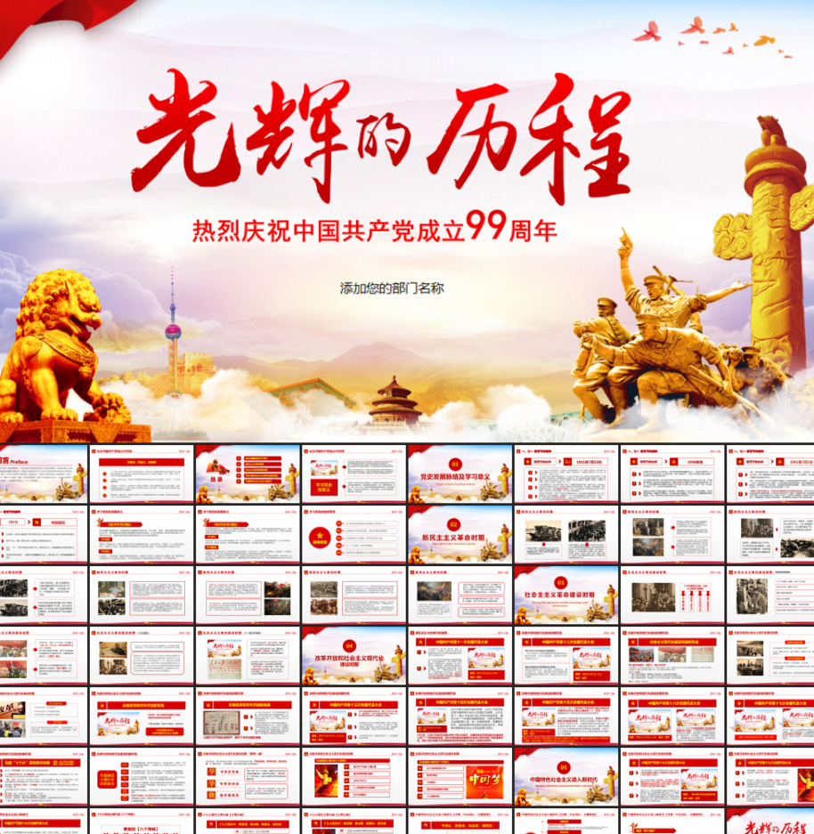

首页
网友祝福
实践活动
关于我们
跳转页面
‹
›
网友祝福
网络上收集的 网友们对建党99周年的祝福
实践活动
通过实践活动对建党99周年的祝福
设计宣传手抄报

举办相关活动班会
组织相关活动晚会
关于我们
如果有需要可以通过以下方式联系我们
All the content published on this website (website address),including text, pictures, audio, video, software, programs, and web page layout design, are collected online.Visitors may use the content or services provided on this website for personal learningresearch or appreciation, as well as other non-commercial or non-profit purposes, but shall comply with the provisions of the copyright Law and other relevant laws, shall not infringe upon the legitimate rights of this website and related right holders.In addition, the use of any content or services on this website for other purposes shall be subject to the written permission of this website and the relevant right holders, and remuneration shall be paid.If the original author of this website is unwilling to publish the content on this website, please inform this site in time and delete it
关于我们
联系方式>>>微博：咸鱼ouTING 微信：OYB1011EXO qq：168287981 QQ邮箱：168287981@qq.com